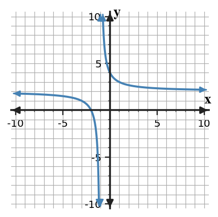

1. Solve and show the minimum work needed to support the result. Identify the vertical and horizontal asymptotes shown in the graph.

2. Solve and show the minimum work needed to support the result. A student claims IVT guarantees $f(c)=5$ because 5 lies between $f(a)$ and $f(b)$, but the graph has a hole inside $[a,b]$. Evaluate the claim.
3. Solve and show the minimum work needed to support the result. A continuous function on $[1,5]$ satisfies $f(1)=-2$ and $f(5)=7$. Does IVT guarantee a solution to $f(x)=4$ for some $x$ in $(1,5)$?
4. Solve and show the minimum work needed to support the result. A model approaches 120 units as time increases without bound. Write an end-behavior limit statement.
5. Solve and show the minimum work needed to support the result. For $f(x)=1+\frac{3}{x--2}$, determine $\lim_{x\to\infty}f(x)$.
6. Solve and show the minimum work needed to support the result. A function has a hole at $x=-1$ but is otherwise continuous near that point. Which single change can make the function continuous?
7. Solve and show the minimum work needed to support the result. List the three conditions required for $f$ to be continuous at $x=0$.
8. Solve and show the minimum work needed to support the result. For $h(x)=\frac{x^2-1}{x--1}$ when $x\ne -1$, what value should be assigned to $h(-1)$ to create a continuous extension?
9. Solve and show the minimum work needed to support the result. A function has a hole at $x=-3$ but is otherwise continuous near that point. Which single change can make the function continuous?
10. Solve and show the minimum work needed to support the result. List the three conditions required for $f$ to be continuous at $x=3$.
11. Solve and show the minimum work needed to support the result. Evaluate $\log_{5}(125)$.
12. Solve and show the minimum work needed to support the result. For $p(x)=\begin{cases}2,&x\lt 0\\3,&x\ge 0\end{cases}$, find $p(-1)$.
13. Solve and show the minimum work needed to support the result. Find the average rate of change of $p(x)=3x^2+2x$ on $[-1,4]$.
14. Solve and show the minimum work needed to support the result. Evaluate $g(1)$ for $g(x)=\frac{2x+4}{x+1}$.
15. Solve and show the minimum work needed to support the result. Find the x-intercepts of $y=(x-4)(x+4)$.
16. Solve and show the minimum work needed to support the result. Solve $(x-6)(x-4)=0$.
17. Solve and show the minimum work needed to support the result. For $r(x)=\frac{3}{x}$, determine the secant slope from $x=2$ to $x=5$.
18. Solve and show the minimum work needed to support the result. Evaluate $\log_{2}(4)$.
19. Solve and show the minimum work needed to support the result. For $p(x)=\begin{cases}4,&x\lt 1\\1,&x\ge 1\end{cases}$, find $p(2)$.
20. Solve and show the minimum work needed to support the result. Simplify for $x\ne 2$: $\frac{x^2-5x+6}{x-2}$.